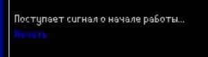
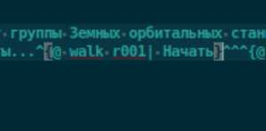
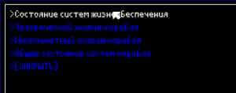

Главная/Chefo
Галерея/Galerio
Музыка/Muziko
INSTEAD
HALF-LIFE
Игры/Ludoj
Другое/Diversajo
Ссылки/Ligoj
Главная
/
Другое
/
INSTEAD - незадокументированные особенности/Nedokumentita trajtoj
/
Здесь будут описаны незадокументированные и другие интересные, но удобные детали для INSTEAD игры
Содержание|Enhavo
[1] Отключение title во всех комнатах/Elŝaltu title en ĉiuj ĉambroj
[2] Сокращение названий классов и др./Mallongigitaj nomoj en klasoj
[3] {@ walk %chambronomo%|Plue/Далее}
[4] Префикс фраз/Prefikso frazoj
[1] Отключение title во всех комнатах/Elŝaltu title en ĉiuj ĉambroj
Пишем в файле main3.lua | Ni skribas en main3.lua:
instead.notitle = true;
[2] Сокращение названий классов и др./Mallongigitaj nomoj en klasoj
Пишем в файле main3.lua | Ni skribas en main3.lua kaj alia~:
R = room;
O = obj;
ctscn = cutscene;
Например/Ekzemple:
R = room;
O = obj;
R {
nam = 'main';
title = '***';
dsc = 'Sceno priskribo';
}
И/Kaj:
O {
nam = 'pomo';
disp = 'Яблоко/Pomo';
inv = 'Ruĝa pomo/Красное яблоко.';
}
[3] {@ walk %chambronomo%|Plue/Далее}
Пишем в файле main3.lua | Ni skribas en main3.lua:
xact.walk=walk;
В игре/En ludo
Код/Kodo
[4] Префикс фраз/Prefikso frazoj
Пишем в файле main3.lua | Ni skribas en main3.lua:
std.phrase_prefix = '>';
Вывод/Eligo:

{kind=link}
{kind=link}
{kind=link}